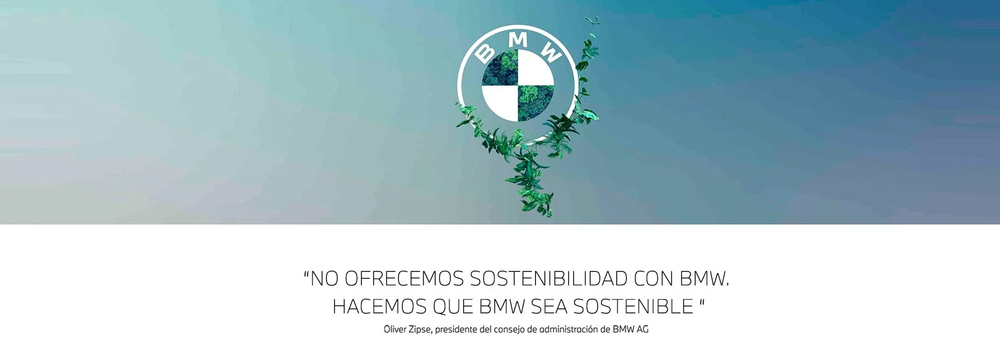
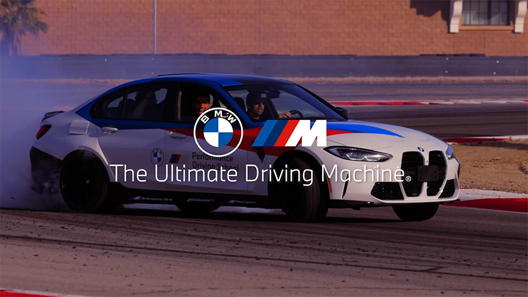

BMW: Bayerische Motoren Werke
BMW, es un fabricante multinacional alemán de vehículos de lujo y motocicletas con sede en Múnich, Baviera, Alemania. La empresa fue fundada en 1916 como fabricante de motores para aviones, los cuales produjo desde 1917 hasta 1918 y nuevamente desde 1933 hasta 1945, creando motores para aviones que se utilizaron durante la Segunda Guerra Mundial.
Los automóviles de la empresa se comercializan bajo las marcas BMW, Mini y Rolls-Royce, mientras que las motocicletas se comercializan bajo la marca BMW Motorrad. En 2023, BMW fue el noveno productor mundial de vehículos motorizados y el sexto por ingresos, con 2,555,341 vehículos producidos solo ese año. En 2023, la empresa ocupó el puesto 46 en el Forbes Global 2000. La compañía tiene una historia significativa en el mundo del automovilismo, especialmente en turismos, autos deportivos y en el Isle of Man TT.
BMW tiene su sede en Múnich y produce vehículos motorizados en Alemania, Reino Unido, Estados Unidos, Brasil, México, Sudáfrica, India, China y, anteriormente, también en los Países Bajos (cesó en 2023). La familia Quandt es un accionista a largo plazo de la empresa, tras las inversiones de los hermanos Herbert y Harald Quandt en 1959 que salvaron a BMW de la bancarrota, con las acciones restantes en manos del público.

- Innovación en diseño y tecnología.
- Compromiso con la sostenibilidad.
- Experiencias de conducción inigualables.
BMW se ha consolidado como un referente en innovación, combinando diseño vanguardista con tecnología de punta en cada uno de sus vehículos. Desde su icónico sistema iDrive, que revolucionó la interacción entre el conductor y el automóvil, hasta su compromiso con la movilidad sostenible a través de la línea BMW i, la marca ha demostrado una constante evolución. BMW no solo se enfoca en la estética y el rendimiento, sino también en la integración de sistemas de conducción autónoma, inteligencia artificial y materiales sostenibles, redefiniendo el futuro de la movilidad con soluciones inteligentes y respetuosas con el medio ambiente.

BMW ha asumido un compromiso claro con la sostenibilidad y la responsabilidad ambiental en todas sus operaciones. La empresa ha implementado prácticas de producción ecoamigables, reduciendo su huella de carbono y promoviendo la eficiencia energética en sus procesos. Además, BMW ha invertido en el desarrollo de vehículos eléctricos y sistemas de propulsión alternativos, con el objetivo de ofrecer una gama completa de opciones de movilidad sostenible para sus clientes. A través de su programa de sostenibilidad, BMW busca liderar la transición hacia un futuro más limpio y respetuoso con el planeta. 
BMW ha desarrollado un sistema de conducción inigualable que le permite a los conductores mantener una confianza y seguridad en todos sus viajes. Este sistema, llamado iDrive, utiliza el reconocimiento facial, la inteligencia artificial y la tecnología de seguridad para garantizar la seguridad y confianza de los usuarios. BMW también ha desarrollado una gama completa de opciones de conducción innovadora, como la función de autoaparcamiento, la función de asistencia de emergencia y la función de monitorización en tiempo real. A través de su programa de seguridad, BMW busca liderar la transición hacia un futuro más seguro y confiable para sus clientes. 